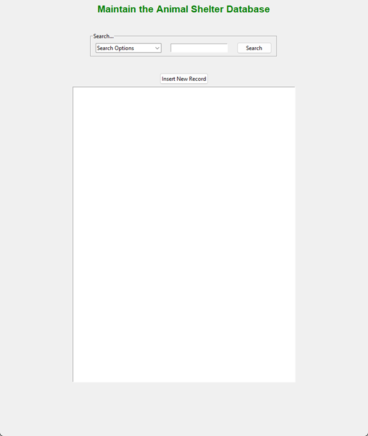
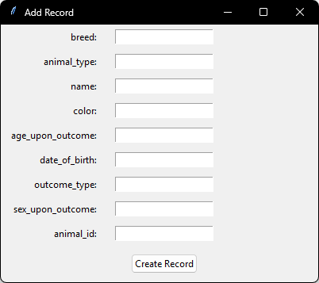

This artifact is a CRUD (Create, Read, Update, Delete) class to maintain a MongoDB. It hold methods that will create a database connection and access tools to a database. It was created in December of 2025. I chose to include this because it was a good foundation for any program that will need to have access to a MongoDB. The core foundation already exists, it just needs a better way to interface with it.
This artifact was included to showcase skills on portability and scalability.
To move away from the using Jupiter notebook by way of accessing the CRUD class, I created a simple
GUI that would simplify accessing the database. Taking away any need for knowledge on how the CRUD
works. Using the jupiter notebook, the user would need to be familular with Python and the classes
within the CRUD. The GUI adds a layer of abstraction making access simple.
Modifying this artifact allowed me to venture into the Python GUI world.
I work with UI using windowbuilder. Seeing the difference between creating
an interface programically rather than a drag and drop gave insight into how the
controls interact with each other. The main challenge was figuring out the layout
using the .grid() for each component. Once I started to add frames I had a better
understanding of how the layouts are

^^ Screen to query the Animal Shelter CRUD

^^ Screen added for creating a new database field